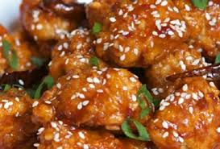

{background-color:lightblue;}
The chicken Little
How to make the Chicken Little

Wat heb je nodig?
- 16 vlezige kippenvleugels
- 4 eetlepels boter
- 3 eetlepels Dijon mosterd
- 1 theelepel tabasco
- 25 centiliter kippenbouillon
- 1 eetlepel Worcestersaus
- circa 50 gram paneermeel
- peper
- zout
- paprika en komijn
Bereidingswijze
De boter in een vuurvaste schaal smelten.
De kippenvleugels wassen, droogdeppen en bestrooien met peper, zout, paprika en komijn, in de schaal leggen en draaien zodat ze goed bedekt worden met de gesmolten boter.
Laat dit 10 minuten in de oven bakken.
Meng intussen de mosterd met de Worcestersaus, de tabasco en 1/3 van de bouillon.
Giet dit over de vleugels en bestrooi ze met 1/3 van het paneermeel.
Keer de vleugels om en laat ze nu 15 minuten bakken.
Herhaal deze bewerking twee maal met de overige derden van de bouillon en paneermeel.
Telkens 15 minuten bakken voordat je ze omkeert.
Laat ze daarna nog circa 10 minuten bakken, ze moeten mooi bruin zijn, en haal ze uit de oven.